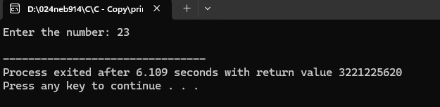
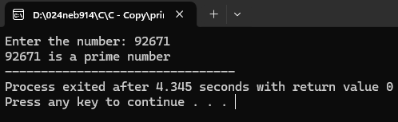
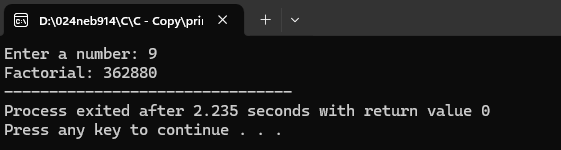
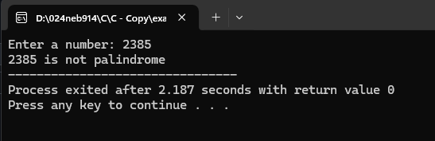
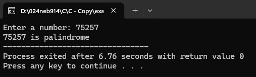
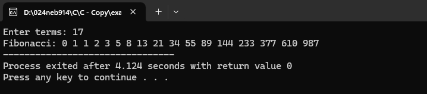
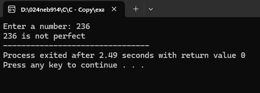
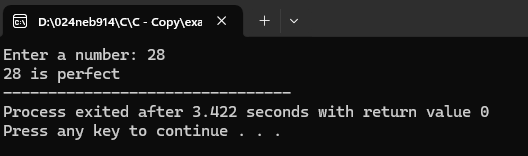

Introduction
As we know every computerized device does not work by itself. They needed to be given some sort of command that makes computer work. These commands helps to instruct computer and program specific action required by the user. Since the command are given in the form of computer language, we need programming language are used to write the set of instruction which commands the computer to perform certain action collectively called programs. These programs are again integrated in order to make a complete software. Simply software is the collection of different interrelated program which performs specific function.
Program Written in any type of programming language are not understood by the computer hence we need some sort of language translator or processor such as assembler, complier and interpreter which has the basic function of converting program written in any type of language into machine level language.
The program written by the programmer is known as source program. After converting it becomes program.
Qualities of Good Programs
- It should be easily understood.
- A program should be correct; it should be error free.
- It should be reliable.
- It should have easily understandable user interface.
- It should be portable and flexible.
Programming Language
In order to make communication between user and computer, we need a computer language that helps user to generate commands to perform as per the requirement. This language with which we can give instruction to the computer is known as programming language. Programming language are the set of different keywords, variables, operators, loops, and other entities using different character sets including numbers, special symbol and alphanumeric values.
Hence, the process of writing the programming language is known as programming and the person who writes program is programmers.
Types of Programming Language
There are several types of programming language which can be categorized as follows:
Low Level Language
Low level language are the machine dependent language which means program written for one type of system cannot be run in another system. Developer should have detail analysis and knowledge about the system for which s/he is going to write a program for. Hence, programming in low level language is very much difficult and time consuming. Different types of programming language are:
Machine Level Language (1GL)
This language consists a sequence of 0’s and 1’s to generate instruction. Since, it uses binary numbers, this type of language is directly understood by processor. So, it has higher execution speed. It is also a machine dependent language in which programmers should have detailed knowledge of the system.
Advantage:
- It is directly understood by the processor so execution speed is relatively high.
- Language translator or processor is not needed.
- They can be used to program specific purpose computer.
Disadvantage:
- It is difficult and time consuming to develop and debug program.
- It is machine dependent language. So, program developed for one system cannot be operated in another system.
- All the syntax and commands are in the form of binary numbers which is difficult to remember.
- Programmers should have detail knowledge about particular system and its architecture.
Assembly Language (2GL)
Assembly language are also an example of low-level language. In this language, instead of writing instruction in the series of 0’s and 1’s we can use mnemonics (symbolic instructions) like ADD, SUB, RST, DIV, MOD and so on. Since it is closer to machine level language, a programmer should have detailed knowledge about computer internal architecture. This language is faster in comparison to high level language. Since, this language is not directly understood by the computer, we need language translator like assembler to convert it into machine level language.
Advantage:
- It is easier to write, debug and understand programming written in assembly level language compared to machine level language.
- Program execution is higher compared to high level language.
- Since they are machine dependent, they are used to develop different device drivers.
Disadvantage:
- It is machine dependent language, i.e. program made for one processor doesn’t run in another processor.
- Use of mnemonics code makes assembly language much more complex.
- Program development and debugging is more difficult and time consuming compared to high level language.
High Level Language
This language is close to English language. High level language code is written in English like structure using mathematical notation. Since it is similar to English language, it is easier to develop and debug the program. It is machine independent language (i.e. program developed for one processor can work on another processor). Since HLL (high level language) are not directly understood by the computers, we need language processor or translator such as complier and interpreter for converting program written in high level language to machine level language. FORTAN (Formula Translator) introduced on 1956 A.D is the first high level language. Nowadays there are many high-level languages like C, C++, python, JavaScript, etc.
Advantage:
- Since it is closer to English language, program written in this language is easier to write, debug and understand.
- Since it is machine independent, program written for one processor can work in another processor.
- Programmer doesn’t have to remember large number of mnemonics and other unusual codes.
- Program development is faster and requires less effort than other language.
Disadvantage:
- Computer doesn’t understand high level language directly. So the program needs conversion before execution.
- Program execution is slower compared to low level language.
Procedural Oriented Language (3GL)
This type of language is high level language which primarily focuses on procedure rather than on data. Hence, they are used to express the logic and the procedure of the program. Since it focuses only on procedure, it is complex and time consuming to write a large program. This type of language follows top to bottom approach i.e. main function is written at the bottom of the program. This type of language doesn’t pose important and powerful feature like data encapsulation, data inheritance, data extraction and so on. So, this type of language has less security compared to object-oriented language. Because of their flexibility, procedure language is able to solve verities of problem. Examples: C, FORTAN, QBasic, etc.
Advantage:
- Program development and debugging is easier compared to low level language.
- More advance and user-friendly software can be developed.
- It is also a machine independent language.
- It is used as general purpose programming.
Disadvantage:
- Language translator or processor is required to execute the program.
- Program execution is slower.
- Data security is less in comparison to other high-level language.
Problem/Object Oriented Language (4GL)
This is the advance form of high-level language which primarily focuses on data rather than procedure. It allows the user to specify what the output should be without describing all the detail (i.e. procedure) of how the data should be manipulated. This type of language follows bottom up approach. That means all main function are written at the bottom of the program whereas classes and object are described at top of the program. Since it has several powerful features such as data encapsulation, data extraction and inheritance, the data are more secure compared to procedure language. Examples: C#, C++, Java, etc.
Advantage:
- Web based application and software can be developed.
- More advance and user-friendly software can be developed.
- It is also machine independent language.
Disadvantage:
- Language translator is required to execute the program.
- Program execution is slower.
- It is difficult to develop hardware-oriented language.
Natural Language (5GL)
Natural language uses simple statement of common communication language where we could write statements that would look like normal sentences. It is still in developing stage; computer scientists are working hard for developing such language. However, programming language like PROLOG (programming logic) is currently in use. For example: - instead of writing some unusual code, programmers would write: “who are the salesmen who has sold more than 30,000 products last month?”
Advantage:
- It will be even easier to develop and debug the program.
- It will also be machine independent language.
- More advance and user-friendly program will be made.
Disadvantage:
- Language translator is required to execute the program.
- Program execution is slower
- It is difficult to develop hardware-oriented language.
Language Translator/Processor
Language translator is that system development software which helps to convert program written in assembly or high-level language (source program) into machine level language (object program). Since it is difficult and incontinent to write a program in machine level language, language developer uses several assemblies and high level language which are not directly understood by the computer. Hence, we use different types of language processor to convert and make machine understandable. There are different types of language translators.
Assembler
These language translator/processor converts program written in assembly level language (source program) into machine understandable language (object language) Since assembly level language are closer to machine level language, the conversion taken by assembler is relatively less. It converts program at once into machine level language.
Compiler
Those language processors which helps to convert program written in high level language (source program) into machine level program (object program). It converts whole program into machine level language at once. It is the largest method of translating a program in which debugging is complex and time consuming. Programming languages like C, C++, Java, etc. use complier
Interpreter
This is the type of language which converts program written in high level language (source program) into machine level language (object program). It converts one statement at a time so its debugging can be easier and less time consuming. Its program execution is slower than that of compiler. Most of the new programming language use interpreter which allocate less memory space. Programs like BASIC, C#, Php, etc. use interpreter for conversion.
Difference Between Compiler and Interpreter
| S.N. | Compiler | Interpreter |
|---|---|---|
| 1 | It translates the whole program into object code at a time. | It translates one line or a single statement of a program into object code at a time. |
| 2 | It finds out the error after compiling the complete program. | It finds out the error after translating a line of the program at a time. |
| 3 | The translating process is incredibly faster. | The translating process is slower. |
| 4 | Compiler based program is difficult to code and debug. | Interpreter based program is easy to code and debug. |
| 5 | It is usually a large program and requires larger memory space. | It is usually a smaller program and requires less memory space. |
| 6 | New programming language don’t use complier. | New programming language use interpreter. |
| 7 | For e.g.: C, C++, java, FORTAN etc. | For e.g.: BASIC. C#, PHP etc. |
Syntax and Semantics
As we know programming language helps the user to communicate with the computer. User is governing by several set of codes which instruct computer to perform some specific task. This set of codes and its structure is known as syntax. In addition, semantics is the meaning attached to individual word or symbol in programming language. For example:
In q basic:
Print” This is programming”; P
Here, Print is Semantics and whole line is Structure (syntax)
Error (BUG)
There may be several errors inside a program which stops program from being executed. Thus, an error in a program is known as a bug. This type of error in a program may arise by not following proper rules given by the programming language due to poor problem analysis or maybe due to hardware failure. Error in the program may five ambiguous (not accepted/false) result. The process of removing error from a computer program is known as debugging. There are three types of error:
Syntax Error
The error which may arise due to not following proper rules or format given by the programming language. Every programming language have their own vocabulary, punctuation and structure. Programmers need to follow every detail while programming. This type of error can be detected by language processor such as compilers and interpreter. For e.g. In C, every statement should end with semi-colon at the end of the statement then the errors encounter is syntax error.
Logical Error
Logic refers to idea or concept used to solve a specific problem. If the problem is poorly understood than it may hamper while solving the problem. The error that is encountered due to poorly developed logic is called logical error. This type of error is not detected by language processor. For example: In order to calculate simple interest, we use the formula I =(P*T*R)/100, if we write above mentioned formula, as I=P*T*R, then the error encounter is logical error.
Runtime Error
When a program is running or executing, it is said to be runtime. Hence, the error that are encounters/found while program is being executed is known as runtime error. It is also not detected by language translator. For example: if insufficient memory space, peripheral device not turning on.
Some Common Terminology in Programming
Data Types
It specifies the type of data to be used in a program. Some common types of data types are:
- Numeric: It is the combination of all the positive and negative whole number including zero.
- Character: it is the possible combination of all the alphanumeric values including especial symbol.
Variable and Constant
- Variable: Those entities which holds either numeric or alphanumeric values and changes its value throughout the time of program execution.
- Constant: Those entities which holds either numeric or alphanumeric values but does not change its value throughout the time of program execution.
Operands and Operators and Operations
Let us consider as:
S=A+B
Where S, A, B are operands
+, = are operands
S=A+B denotes sum of two operands A, B which is Operation
Types of Operators
It is a special symbol which helps to make operation successful i.e. it helps to make some specific operation.
Commonly used operators are:
- Arithmetic operators: +, -, /, *
- Relative operators: <, >, >=, <=, =
- Logical operators: AND, OR, NOT
Program Design Tool
There are several program designs tools that are available. Some of the commonly used program design tool are algorithm, flowchart, pseudocode.
Algorithm
The step by step procedure or sequential steps for solving a specific problem is known as algorithm. Algorithm are written in simple English language and are not even close to any programming language.
Rules for Writing Algorithm
- Algorithm should execute output after a finite step.
- Algorithm should not depend upon any programming language.
- Algorithm should terminate after finite steps.
Examples:
1. Write an algorithm to calculate simple interest.
- Step 1: Start
- Step 2: Read the value of P.T.R
- Step 3: Calculate simple interest by using i=(P*T*R)/100
- Step 4: Display simple interest(i)
- Step 5: Stop
C Programs
1. Check if a Number is Prime
#include<stdio.h>
int main()
{
int n, i, c=0;
printf("Enter the number: ");
scanf("%d",&n);
for(i=1;i<=n;i++)
{
if(n%i==0)
{
c=c+1;
}
}
if (c==2)
{
printf("%d is a prime number",n);
}
else
{
printf("%d isn't a prime number",n);
}
return 0;
}
Output for Prime Number Check


2. Calculate Factorial of a Number
#include<stdio.h>
int main()
{
int n,i, f = 1;
printf("Enter a number: ");
scanf("%d", &n);
for(i = 1; i <= n; i++)
{
f = f* i;
}
printf("Factorial: %d", f);
return 0;
}Output for Factorial Calculation

3. Check if a Number is Palindrome
#include<stdio.h>
int main()
{
int n, original, reverse = 0;
printf("Enter a number: ");
scanf("%d", &n);
original = n;
while(n > 0) {
reverse = reverse * 10 + n % 10;
n /= 10;
}
if(original == reverse)
printf("%d is palindrome", original);
else
printf("%d is not palindrome", original);
return 0;
}Output for Palindrome Check


4. Generate Fibonacci Series
#include<stdio.h>
int main()
{
int n, a = 0, b = 1, c;
printf("Enter terms: ");
scanf("%d", &n);
printf("Fibonacci: ");
for(int i = 1; i <= n; i++) {
printf("%d ", a);
c = a + b;
a = b;
b = c;
}
return 0;
}Output for Fibonacci Series

5. Check if a Number is Perfect
#include<stdio.h>
int main()
{
int n, sum = 0;
printf("Enter a number: ");
scanf("%d", &n);
for(int i = 1; i < n; i++) {
if(n % i == 0)
sum += i;
}
if(sum == n)
printf("%d is perfect", n);
else
printf("%d is not perfect", n);
return 0;
}Output for Perfect Number Check

